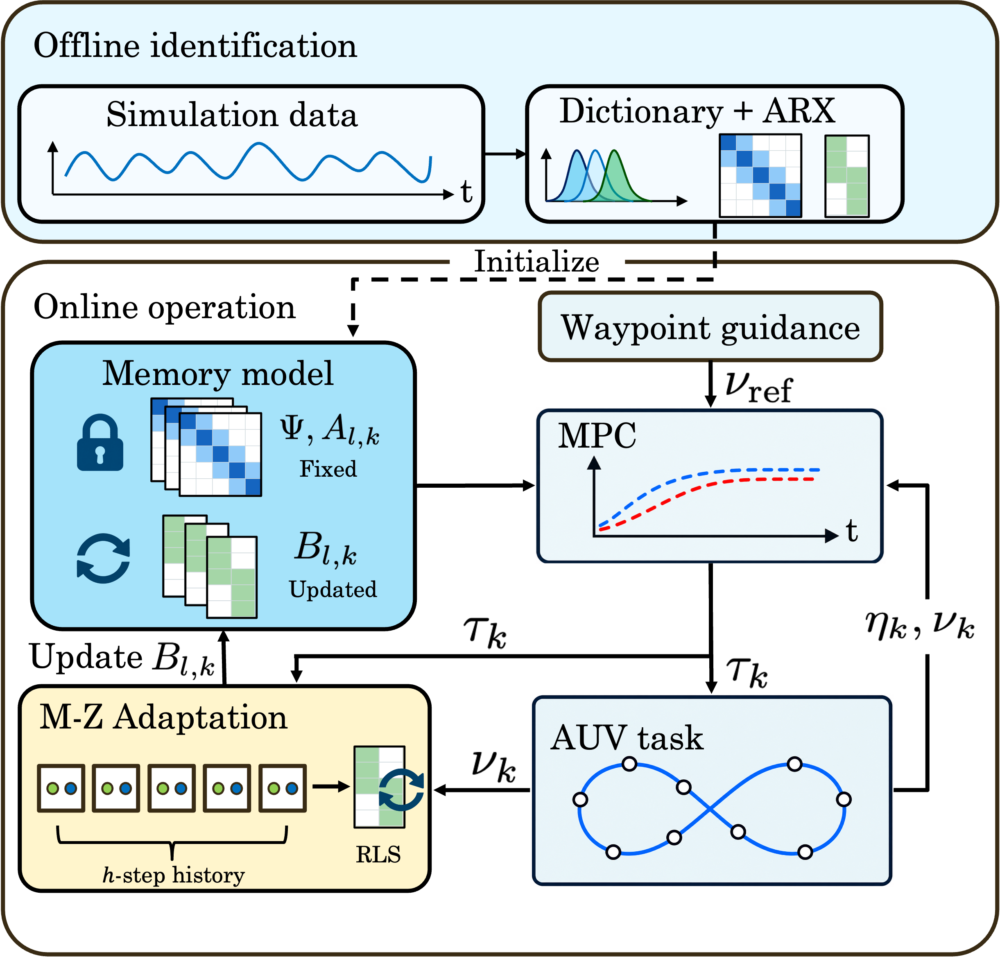
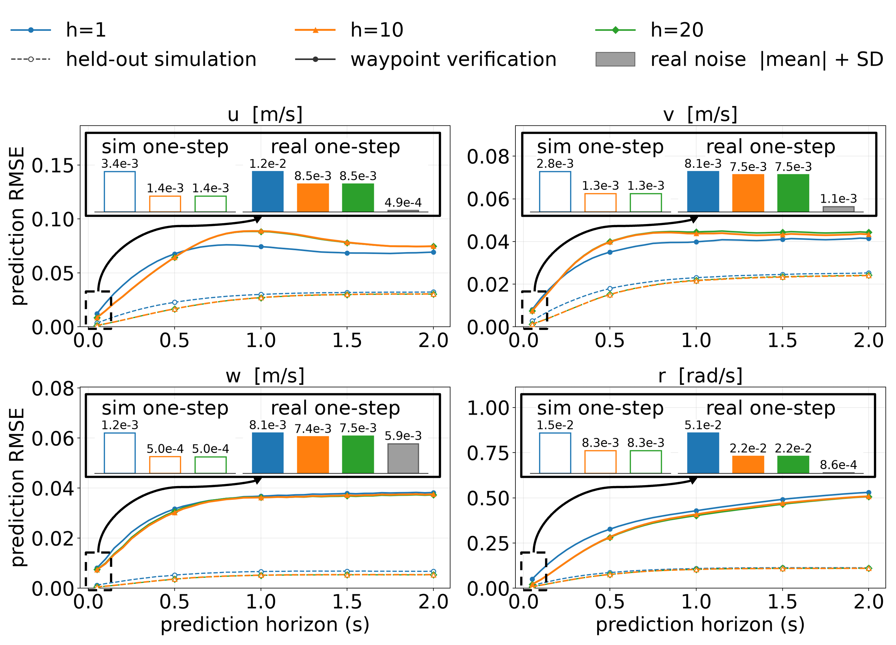
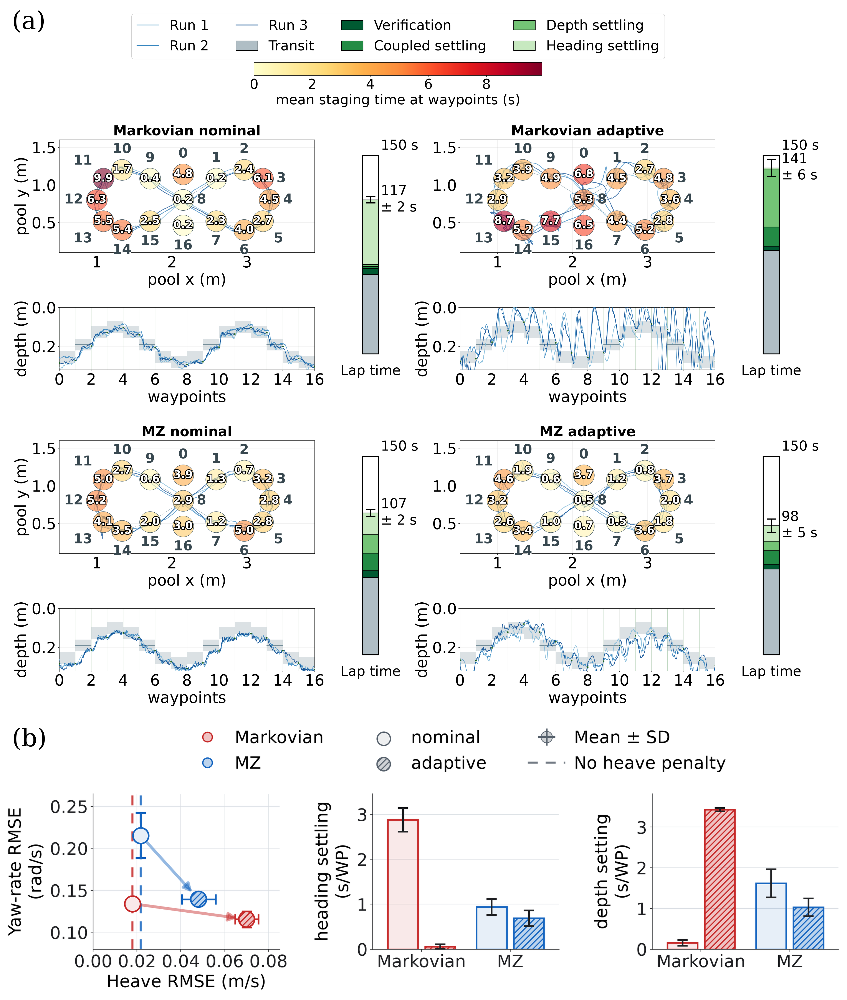
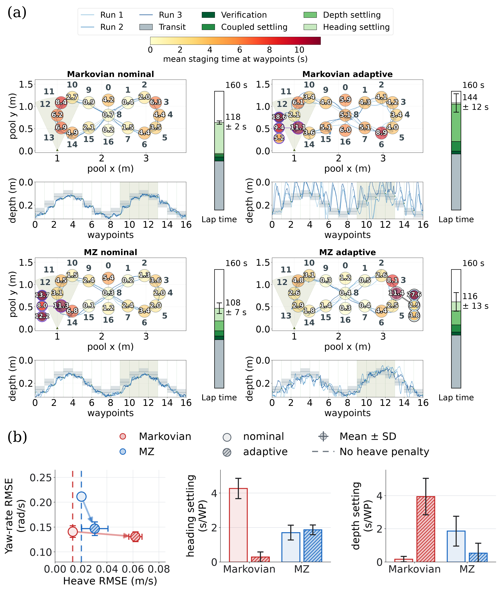

01 / UNDERWATER ROBOTICSUniversity of Notre Dame
AUV Dynamical
Modeling and Control
I build learning-based models and controllers that help underwater robots follow planned paths. This project brings together simulation, online model updates, and camera-based tracking, with testing in a real pool.
Data-driven modeling
in simulation
Train models to predict an underwater robot’s motion using simulation data, then evaluate their predictions against measurements from pool experiments.
Online model update
Update how the model responds to control commands as new measurements arrive, helping address differences between simulation and the real robot.
Visual localization
Track the robot’s position and heading using an overhead camera and visual markers, providing feedback for navigation tests.


Explore the models and pool experiments



